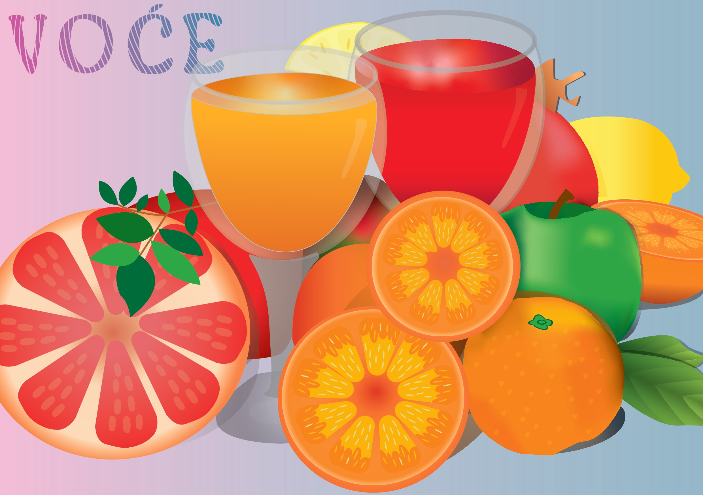
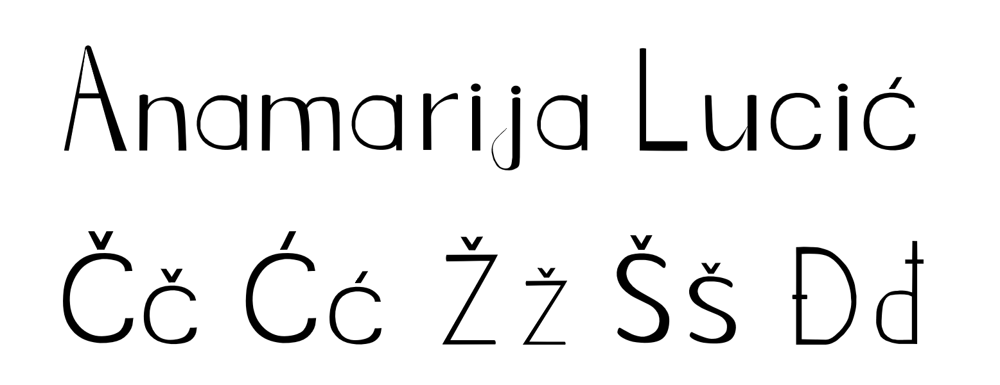
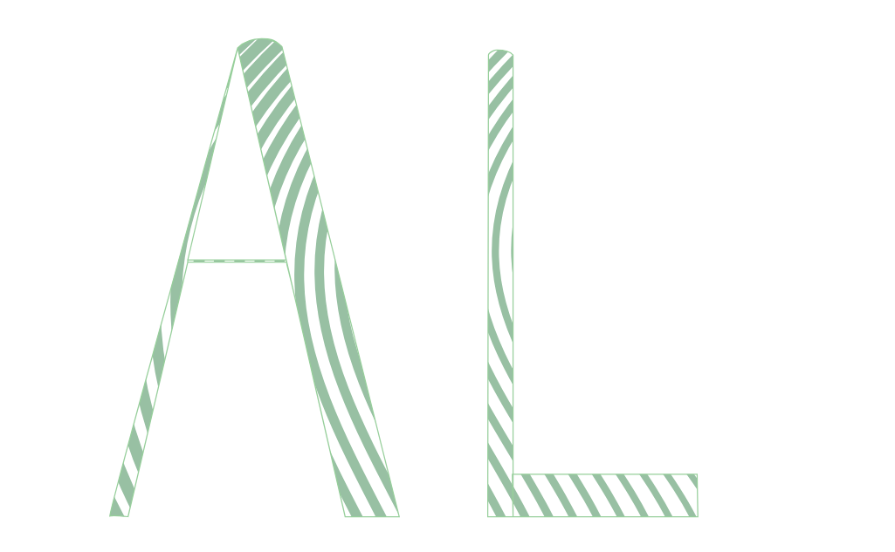
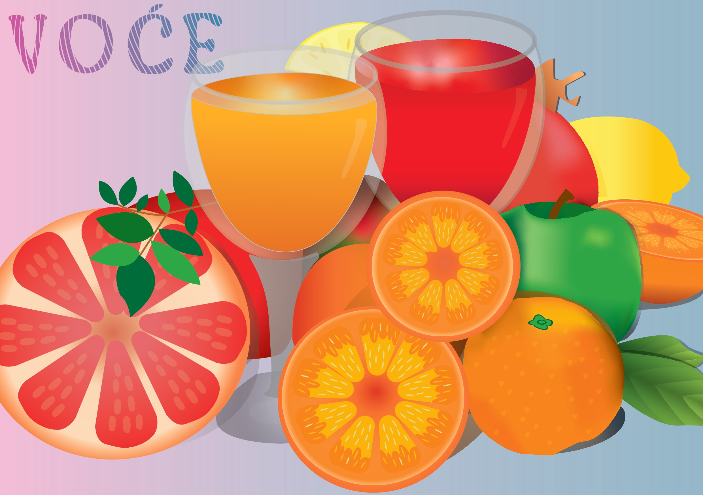
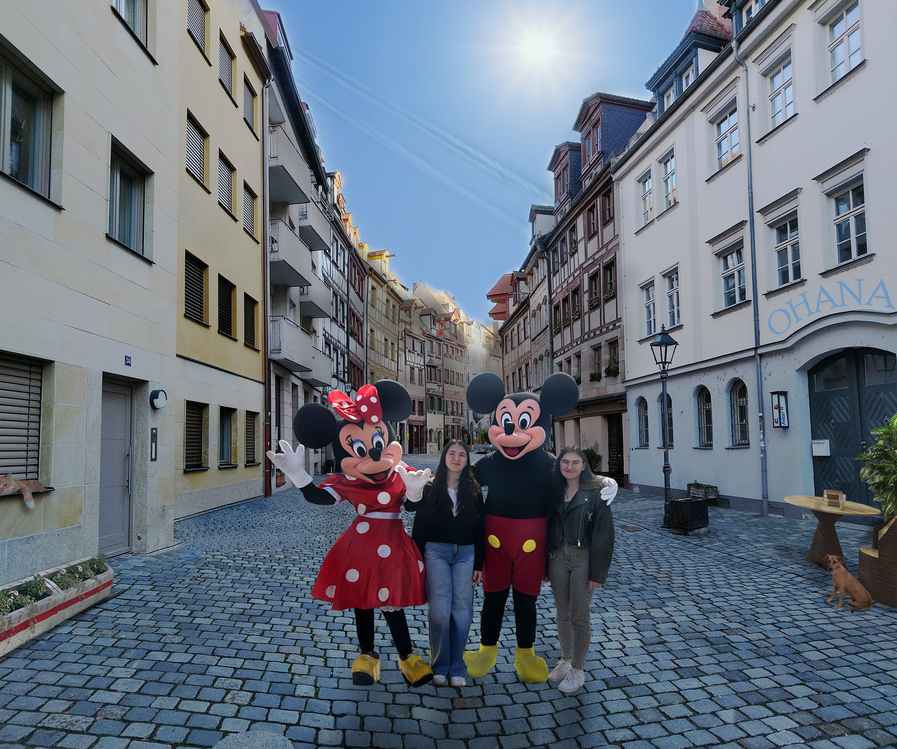

Kolokvij projektni zadatak – vektorska grafika
Izrada projektnog zadatka u sklopu cjeline vektorska grafika koristeći programe Illustrator i Fontforge.
Izrada vlastitog fonta u programu Fontforge.
Izrada bezierovih krivulja u programu Illustrator.
Crtanje u programu Illustrator.


Korištenje gradijenta i transparencije u programu Illustrator.


Izrada projektnog zadatka u sklopu cjeline vektorska grafika koristeći programe Illustrator i Fontforge.
Korekcija fotografija u Photoshopu koristeći tehnike retuširanja.


Koloriranje fotografija u programu Photoshop.


Korištenje fotomontaže, selekcija, maski, korekcija boja u programu Photoshop.

Izrada projektnog zadatka u sklopu cjeline piksel grafika koristeći program Photoshop. Korištene su tehnike retuširanja, fotomontaža i koloriranje.
Izrada vlastitog cinemagrafa koristeći Photoshop i Premiere.


Montaža videozapisa u programu Premiere.